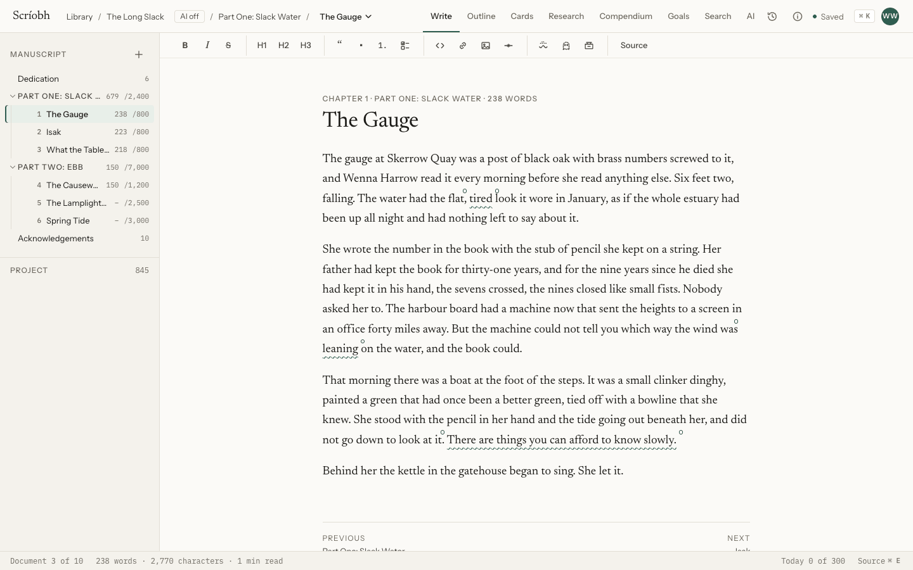
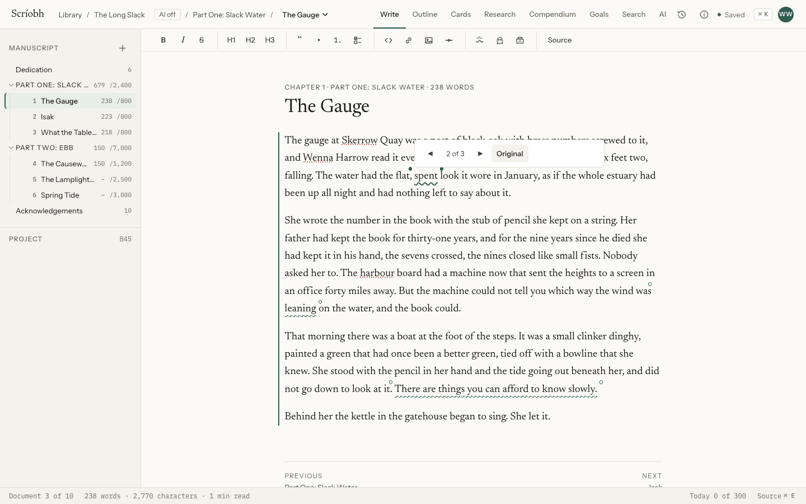
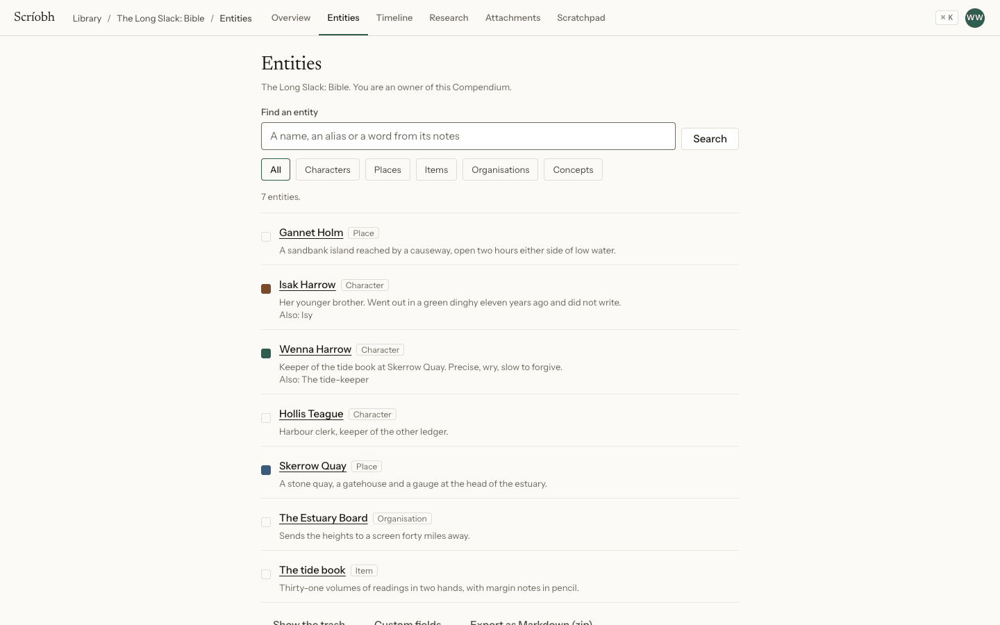
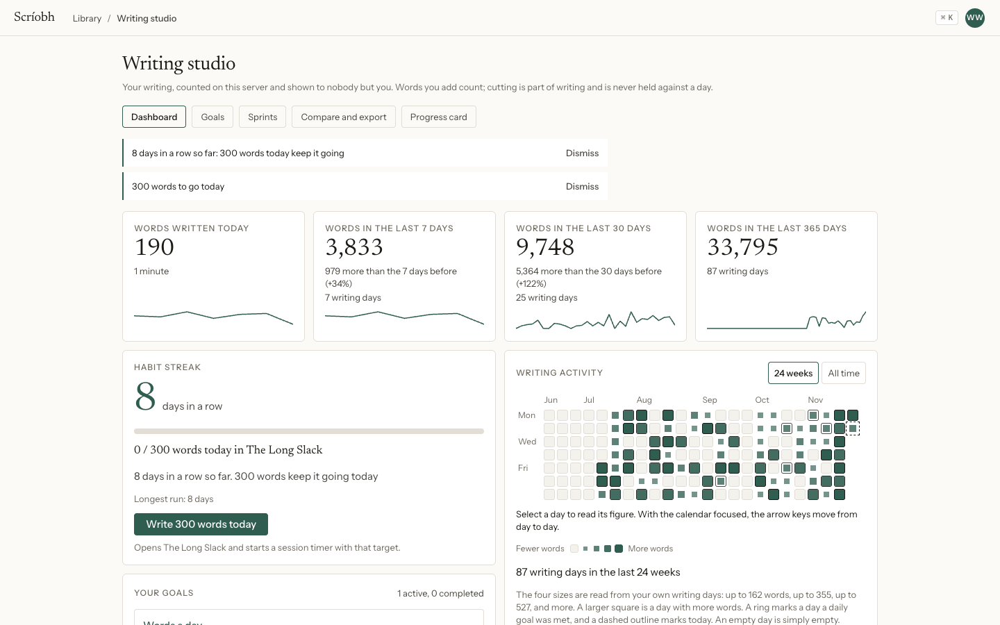
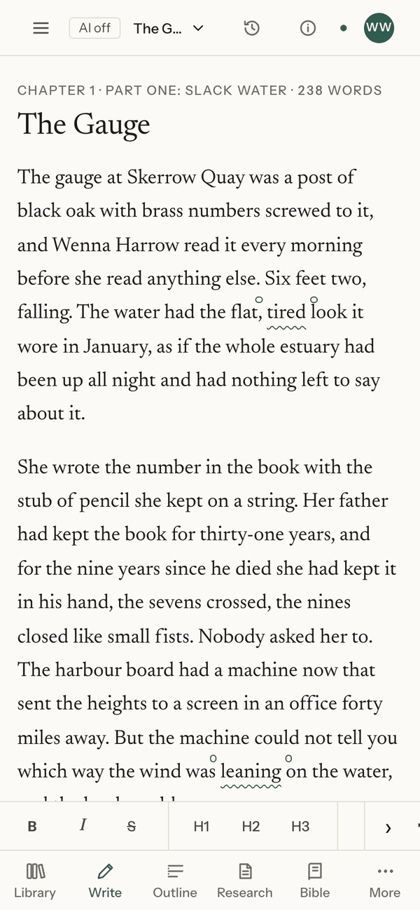

Self-hosted long-form writing
A quiet room for the long thing you are writing.
Private, and built for the whole life of a piece of work: a blog post, an essay, a report, a novel. You run it on your own machine or home lab, or open it as a desktop app. Your words stay on your disk.
No account on someone else’s server. No telemetry. No editor that phones home mid-sentence.

- It runs as
- One Go binary and one SQLite file
- You sign in with
- The OpenID Connect provider you already run
- Underneath
- Markdown, in a database you can read
- It sends
- Nothing you did not configure
A short walk-through
Watch it work.
What it is
Organised around the project, not the note.
Most writing tools are either note apps with a publish button or desktop word processors with a sync problem. Neither holds a manuscript.
Scríobh (Irish for “write”) is built around the project: a manuscript tree, a plan beside it, a cast of characters underneath it, and a revision of every word. Sign in with the identity provider you already have. Keep a plain-text copy in a Git repository you control. Bring your own AI keys if you want AI at all, including a model on the same box.
What it is not. Not a notes app, not a real-time collaborative document, not a publishing platform, not an AI book generator, not multi-tenant SaaS. It is not encrypted at rest either: protecting the volume is your job.

Commitments
Five promises that decide arguments.
-
Private by construction
No analytics, no telemetry, no external fonts or CDNs, no error-reporting service, and no outbound request you did not configure. AI is opt-in per project, previewed before anything is sent, and can be forced to a local model. This page keeps the same promise: it loads nothing from any other site.
-
OIDC only
No local passwords, no reset flow, no second factor of its own. Your identity provider decides who can sign in. The desktop app does not bypass this: it runs a real embedded OpenID Connect issuer on the same code path.
-
Markdown underneath
The database is canonical, and a read-only Markdown copy of every project is written continuously, so
grep,gitand a text editor always see your work. Git is push-only: Scríobh never pulls, and import is the only way a remote’s text enters it. -
Editorial before generative
Outline, entities, timeline, research, revisions and compile do not depend on AI. AI can be switched off and the book stays whole.
-
The writing surface is sacred
Nothing animates, reflows or interrupts while you type. Generated text is never inserted without an explicit accept, and live updates never overwrite what you have not saved.
It is also small enough to trust: one binary, one data directory, no queue, cache or search service. No gradients. Both themes are designed, and contrast is checked by a script.
Features at a glance
What is in it.
Other wordings, kept beside the chosen one
Alternatives, ghosting, the stash and the Lab keep other phrasings next to the one in the text. The document always holds the wording you chose, so an export reads as ordinary Markdown. Ghosting never deletes; the Lab never rewrites.

An outline that shows where the book stands
Synopses, targets and statuses, with progress for every part and chapter, in manuscript order, in story-timeline order or by point of view.

The book’s bible, beside the book
Characters, places, items, organisations and concepts, with aliases and relations, a timeline with continuity checks, research notes and attachments. A Compendium can be shared across projects.

Goals that never shame a cut
Words by day, week and year, a habit streak, sprints and goals. It counts words added; cutting is part of writing and is never held against a day. Computed on your server and shown to nobody but you.

Compile when it is ready
US and UK manuscript DOCX, styled DOCX, EPUB 3, Markdown, and print-ready PDF with covers. You look at it first, and nothing is made until you press Download. Exports are deterministic and recorded with a manifest of what they included.

The same page at phone width
An installable app shell with an offline page, and a formatting bar that sits above the keyboard. The same server-rendered pages, drawn for 390 px as well as for a desk.

And the rest of it
Writing and structure
A ProseMirror editor with a Source view of the same Markdown, wiki links and backlinks, versions you can compare and restore, search, and light and dark themes.
Review and sharing
Comments anchored to the text, suggestions an editor accepts or rejects, read-only or comment links for guests, and an administrator console.
Going in and out
Import from a folder, Git, Obsidian, Word (tracked changes become suggestions), Scrivener, WordPress, Ghost, an EPUB or a PDF with a text layer. Push-only Git sync, a Markdown mirror, backup and restore.
Beyond the compile presets
A submission bundle, HTML export, and static site publishing, alongside the manuscript, EPUB and print-ready PDF.
AI, optional
A local Ollama or any OpenAI-compatible server, OpenRouter or OpenCode. A per-project policy, a preview of the exact request, budgets. Nothing is written into a chapter without an explicit accept.
Agents and integrations
One operation registry behind the pages, a REST API, a scoped command-line tool with a generated skill, an MCP endpoint and signed webhooks.
The desktop app
Or open it as an app.
The same server binary in a Tauri window, with no server to run and no identity provider to set up. A first-run local profile (a name, no password) signs in through an embedded OpenID Connect issuer, never a bypass.
Your writing lives in the system’s place for application data, and with AI off nothing leaves the computer. The app never looks for updates by itself.
Install
Pick one way in.
The container image
The server, published to the GitHub container registry as
ghcr.io/crueber/scriobh. Needs an OpenID Connect provider you already run.Binaries and desktop packages
Server and command-line binaries for Linux, macOS and Windows, a Linux
.deb, and desktop packages, when a release has them. Unsigned, with aSHA256SUMS.txt. The releases page has the current list.From source
A development build with a built-in sign-in for three fixed test users, to look at it:
make run, ordocker compose up --build. It must never be exposed to a network.
Running the image
- Register Scríobh with your identity provider as a confidential client (authorization code with PKCE) and note the issuer, client id and secret.
- Write an
.envwithSCRIOBH_BASE_URL,SCRIOBH_OIDC_ISSUER,SCRIOBH_OIDC_CLIENT_ID,SCRIOBH_OIDC_CLIENT_SECRETandSCRIOBH_SECRET_KEY(fromopenssl rand -hex 32; keep a copy off the machine). - Run it, and put TLS in front.
docker run -d --name scriobh --restart unless-stopped \
--read-only --tmpfs /tmp --cap-drop ALL --security-opt no-new-privileges:true \
-p 127.0.0.1:8080:8080 -v scriobh-data:/data --env-file .env \
ghcr.io/crueber/scriobh:latestThe tag latest moves; for anything that must not change under you, pin a release tag. The whole guide, with reverse-proxy examples, backups and the provider notes, is docs/OPERATIONS.md.
Status
What has not been verified.
The plan in the repository’s docs/ is the contract, and the releases are tagged as the work lands. A tag records what was built, not a claim that the roadmap’s exit criteria are met. Said plainly, because the documentation leans on it, here is the list.
The complete statement is in docs/OVERVIEW.md.
- The desktop app has been run unsigned on one Mac and nowhere else by a person. No installer was used on a clean machine, no update was ever fetched, and nothing was seen on Windows.
- The container image has never been run to serve, and the compose files only parse.
- No real identity provider has been registered against this build; only the built-in development issuer has been used. No real AI provider, MCP client, printer, copy of Word, mail relay, Pandoc, embedding model or Git host has been used; stand-ins on loopback were.
- No screen reader, physical phone or browser other than Chromium has been used on the newer screens.
- The exit criteria that need people (two independent users installing from the guide unaided, a printed proof, a restore on a clean machine by someone other than the author) have not been met.
Documentation
Read before you run.
- OperationsInstall, sign-in, proxy, backup and restore, AI providers, Git sync, webhooks.
- OverviewWhat exists, what is not built, what is not verified.
- VisionWho this is for, what it is not, and the principles that decide arguments.
- FeaturesEvery feature, and the things deliberately not built.
- DesktopWhat the app is made of, where it keeps things, what it will and will not do.
- ArchitectureGo, HTMX, SQLite, the operation registry, security, performance budgets.
- Working with an agentA scoped key, the command-line tool, and the generated skill.
- DesignTypography, colour, motion and the editor. The look of this page comes from it.